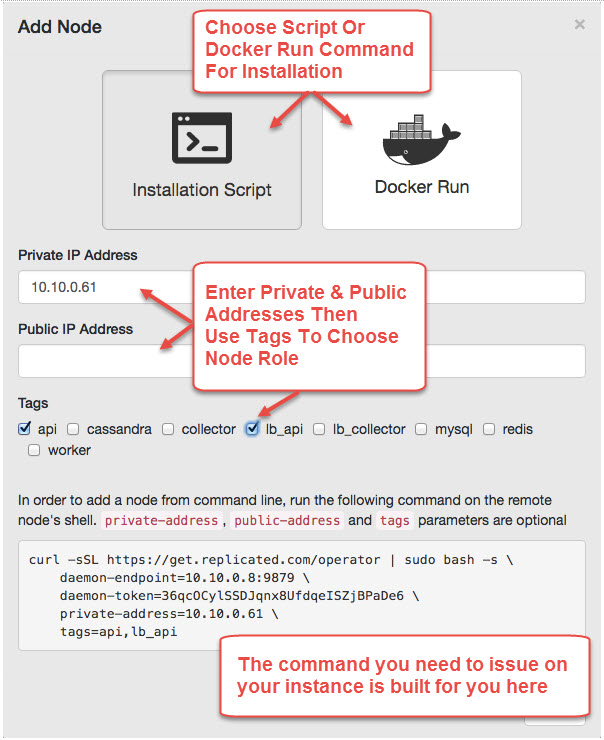

Install Using the Replicated GUI
You can use the Replicated UI to install the Sysdig platform on either a single host or on multiple hosts. If multi-host, decide which machine will also run the Replicated Admin Console and begin there.
Note
If your environment is "airgapped" (no access to inbound or outbound internet traffic), there are some setup steps you must perform before doing the GUI-based Replicated installation.
See Airgapped Installation for details.
Log in to the chosen machine with a shell and run a command to install the Replicated components. You can also install Docker if it's not already on the environment.
Log into the designated server instance with SSH.
Run the following commands:
a. To install the Replicated Infrastructure and Docker:
sudo curl -sSL https://install.sysdigcloud.com/docker | sudo bash
b. If Docker is already installed on the server instance, add
-s --no-dockerto the command:sudo curl -sSL https://install.sysdigcloud.com/docker | sudo bash -s -- no-docker
c. If installing the Replicated Infrastructure behind a proxy, modify the installation command as shown below:
sudo curl -sSL -x http://<proxy>:<port> -o /tmp/sdc-onpremises-installer.sh https://install.sysdigcloud.com/docker && bash /tmp/sdc-onpremises-installer.sh http-proxy=http://<proxy>:<port>
As prompted, open the Replicated Client at
https://<yourserver>:8800.Supply the DNS hostname for the Replicated Admin Console.
Accept the self-signed certificate, or upload a custom SSL certificate and private key.
Note
Note: If a self-signed certificate is uploaded, it must include the end user, all intermediate, and the root certificates, as the certificate will be used by the Sysdig platform, as well as for the Replicated Admin Console.
To later replace a self-sign cert with a custom cert, see Replace a Self-Signed Cert.

Click the
Choose Licensebutton, and upload the Sysdig license file supplied from Sysdig Sales.Choose Online installation option if prompted.
Once the Sysdig license validation is complete, secure the Replicated Admin Console using a local password, LDAP user account, or anonymous access (insecure).
 |
Note
Sysdig recommends securing the console with either a local password or LDAP user account.
Click Continue.
After clicking Continue, the Settings page is displayed. Here you enter the configuration information that will be used by Replicated to orchestrate the Sysdig installation.
| Configure the Basic Settings for the Sysdig installation
SMTP Relay ConfigurationThis information will be used for e-mail notifications. See also Notifications Management.
Click Note: Advanced Settings are defined after consultation with a Sysdig Sales Engineer. |
|---|

These settings are typically defined with consultation from a Sysdig Sales Engineer.
| JVM Entries (Required) Any JVM options to be passed to the application, such as memory constraint settings for the Java Virtual Machine components, proxy settings, etc. At a minimum, it is recommended to define the memory constraints, in the format: Note that if multiple components are on a single machine, adjust the percentages as needed so JVMs all fit in a node.
Ports and Security
Database Entries
|
|---|

When fields are complete, click Save.
After Saving, click Start Now to apply settings to the environment immediately. Click Cancel to apply settings at a later time.
After completing the Settings and restarting, no further installation steps are required for a single-host install.
The dashboard will remain in Starting mode for approximately 4-5 minutes, depending on the internet connection bandwidth, while Sysdig application software is downloaded and installed. Once the installation is complete, the dashboard will move to Started mode.
Click the
Openlink to navigate to the Sysdig Monitor login panel.Input the Super Admin user login credentials defined in the basic settings, above.
Next Steps
To start, stop, and update the application, or to retrieve support information, use the Replicated Admin Console:
https://<yourserver>:8800.To login as a user and see metrics for hosts with the Sysdig Agent installed, use the Sysdig Monitor Web Interface:
https://<yourserver>:80If you have not yet done so, install Sysdig Agents to monitor your environment. See Agent Installation for details.
After configuring the settings and clicking Start Now, an error will indicate the need to assign and install the remaining components. You will need to define the hosts/nodes to be used and will assign the Sysdig components to be installed on them. The steps below describe the actions on one host; they must be repeated on all applicable hosts and all the Sysdig components must be assigned.
Choose the
Clustertab in the Replicated Admin Console.
From here, you can tag components to be run on the local host, and/or add new nodes.
To add and configure new nodes:
Click
Add Node.The Add Node worksheet is displayed. Here you enter the IP address and then tag the Sysdig component(s) to be installed on that node.
Replicated will compile either an installation script or a Docker run command out of your entries, which you will copy and use on the given node.
 On the Add Node worksheet page, do the following:
Choose
Installation scriptorDocker run commandoption.Enter private and/or public IP address, depending on the type of access you want to permit.
Select the Sysdig components to be installed by checking the appropriate "Tags" buttons.
Descriptions in the table below:
Name
Tag
Role Description
api
api
Application Programming Interface server
cassandradb
cassandra
Cassandra database server
elasticsearch
elasticsearch
Elasticsearch server for events storage/search
collector
collector
Agent metrics collector
lb_collector
lb_collector
Load balancer for collector service; handles connections from the agents
lb_api
lb_api
Load balancer for API service; handles user connection requests to the Sysdig application.
Use the address for this node as the DNS entry for the cluster.
mysql, redis
mysql & redis
MySQL & Redis databases
worker
worker
Metrics history processor
emailrenderer
emailrenderer
Email renderer
nginxfrontend
nginxfrontend
Frontend static server
Note
When setting up a DNS entry for the cluster, use the address for the '
lb_api'node.At the bottom of the page, a
curlscript or Docker run command is compiled for you.Copy the command and issue it on the targeted host.
Repeat this procedure on all desired hosts.
Restart the Sysdig application from the Replicated console.
The dashboard will be in “Starting” mode for several minutes while software is downloaded and installed onto each server component (depending on your internet connection bandwidth).
You should see green check marks for each host next to the Provisioned and Connected columns, as the software is installed and the node connects successfully to the Replicated Admin server.
Once the installation is fully completed, the infrastructure admin dashboard will be in “Started” mode and will also show the “Open” link that will bring you to Sysdig Monitor web interface login screen.
At the login screen, use the credentials configured earlier (Default User) to log in and start using the Sysdig application on-premises solution.
To start, stop, and update the application or retrieve support information use the Replicated Admin dashboard: https://server_address:8800
To log in as a user and see metrics about hosts where Sysdig agents are installed, use the Sysdig Monitor UI: https://server_address:80